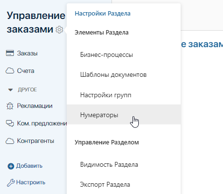
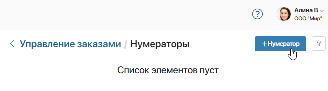
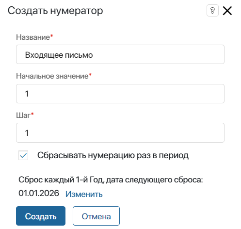
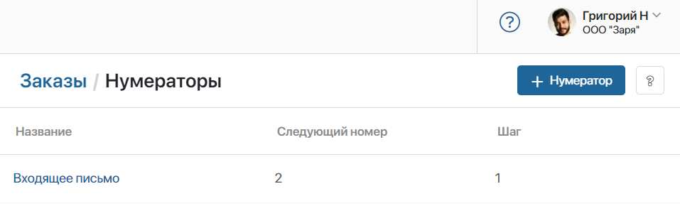
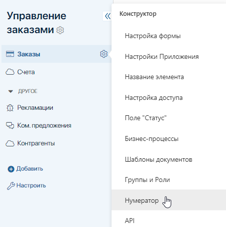
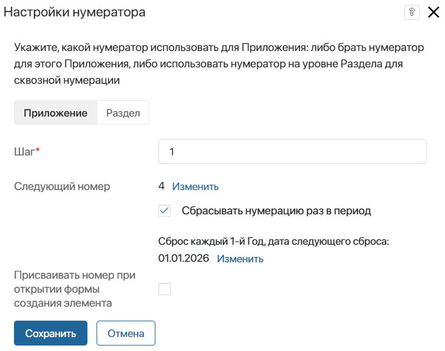
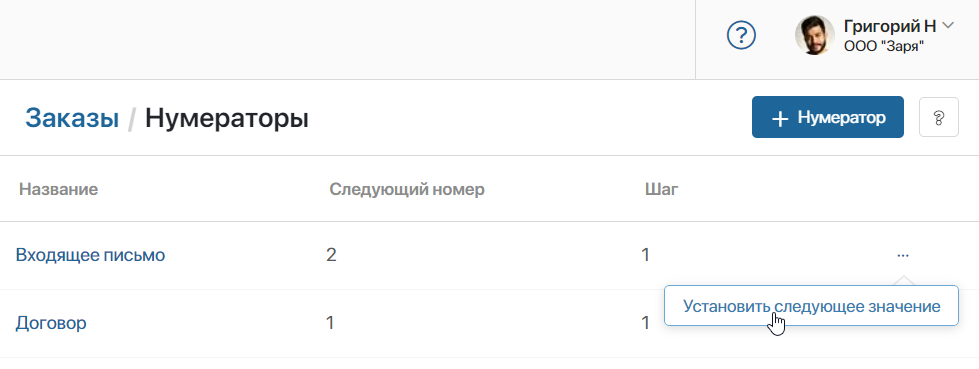
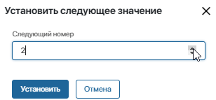

Нумератор — это набор правил, которые используются для генерации последовательных номеров для элементов приложения. Например, их можно использовать для формирования названия элемента по шаблону.
Различают нумераторы на уровне раздела и на уровне приложения. Первые служат для сквозной нумерации нескольких приложений, вторые — для присвоения порядковых номеров в рамках одного приложения.
начало внимание
Если нумератор на уровне раздела связывает несколько приложений, то такие приложения нельзя экспортировать по отдельности.
конец внимание
Нумератор на уровне раздела
Нумератор на уровне раздела позволяет установить сквозную нумерацию элементов нескольких приложений. Чтобы создать его:
- Нажмите рядом с названием раздела значок шестерёнки и выберите пункт Нумераторы.

- На открывшейся странице нажмите на кнопку + Нумератор.

- В появившемся окне заполните поля:

- Название* — укажите название нумератора, например, Входящее письмо;
- Начальное значение — укажите, с какого числа начнется присвоение номеров, например, с 1;
- Шаг* — укажите, с каким шагом номера будут присваиваться элементам. Например, если в поле указано значение 1, то номера будут присваиваться в следующей последовательности: 1, 2, 3, 4 и т. д.;
- Сбрасывать нумерацию раз в период — активируйте опцию, чтобы запланировать обновление нумерации элементов. Нажмите Изменить и задайте регулярность и точную дату следующего сброса нумерации.
Например, для ежегодного обновления в поле Период сброса нумерации введите значение 1 и выберите Год. Чтобы нумерация сбрасывалась один раз каждые два месяца, введите значение 2 и выберите период Месяц.
- Нажмите на кнопку Создать.

- Откройте приложения из раздела, которые необходимо объединить между собой сквозной нумерацией. В настройках каждого из них укажите созданный нумератор.
Чтобы задать разную нумерацию для отдельных групп приложений, вы можете настроить несколько нумераторов на уровне раздела.
Нумератор на уровне приложения
С помощью нумератора на уровне приложения элементам присваиваются последовательные номера, которые записываются в системное поле Индекс из контекста приложения.
Вы можете настроить:
- нумерацию элементов в рамках одного приложения;
- сквозную нумерацию для элементов нескольких приложений в рамках одного раздела.
Чтобы настроить нумератор:
- Рядом с названием приложения нажмите значок шестерёнки и выберите пункт Нумератор.

- На вкладке Приложение задайте настройки для нумерации элементов текущего приложения.

- Шаг* — укажите, с каким шагом номера присваиваются элементам;
- Следующий номер — значение, с которого начнётся или продолжится нумерация. Его можно изменить;
- Сбрасывать нумерацию раз в период — активируйте опцию, чтобы запланировать обновление нумерации элементов. Нажмите Изменить и задайте регулярность и точную дату следующего сброса нумерации;
- Присваивать номер при открытии формы создания элемента — включите опцию, чтобы номер присваивался элементу в момент открытия формы создания, а не после сохранения записи. Номер считается использованным, даже если пользователь закрыл форму создания. Поэтому при включении настройки возможны пропуски в нумерации.
- Перейдите на вкладку Раздел для настройки сквозной нумерации элементов нескольких приложений в рамках одного раздела:
- Нумератор* — укажите нумератор, созданный на уровне раздела. Для нумерации элементов приложения будут использоваться его настройки;
- Присваивать номер при открытии формы создания элемента — включите опцию, чтобы номер присваивался элементу в момент открытия формы создания, а не после сохранения записи. Номер считается использованным, даже если пользователь закрыл форму создания. Поэтому при включении настройки возможны пропуски в нумерации.
- Нажмите Сохранить.
Настройки нумератора будут использоваться при присвоении номеров для всех новых элементов данного приложения.
Изменить настройки нумератора
После сохранения настроек порядковые номера присваиваются элементам приложения автоматически. Вы можете отредактировать используемый нумератор.
Для приложения измените настройки, как описано в разделе «Нумератор на уровне приложения».
Чтобы отредактировать нумератор на уровне раздела, нажмите значок шестерёнки рядом с названием этого раздела и выберите Нумераторы. Откройте нумератор из списка и скорректируйте его настройки. Изменённые правила будут использоваться для нумерации новых элементов.
Установить следующий номер вручную
Вы можете вручную задать порядковый номер, с которого продолжится нумерация. Например, чтобы сбросить нумерацию, можно установить значение 1.
Для нумератора на уровне приложения перейдите в его настройки и в поле Следующий номер нажмите Изменить. Введите новое значение и сохраните настройки.
Для раздела перейдите к списку нумераторов. Напротив названия нумератора нажмите значок три точки и выберите пункт Установить следующее значение.

В появившемся окне укажите следующий номер и нажмите кнопку Установить.

Сквозная нумерация элементов продолжится с заданного значения.